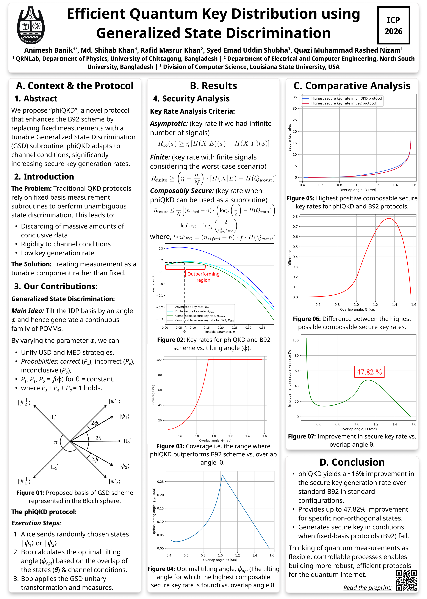

Conference Presentations

In search of a potential method for teaching quantum mechanics at undergraduate level
5th ICPSDT, Department of Physics, CUET

Efficient Quantum Key Distribution using Generalized State Discrimination
ICP, Department of Physics, University of Dhaka
Oral Presentations
Best Oral Presenter (Theoretical Physics Session)
6th International Conference on Physics for Sustainable Development and Technology (ICPSDT-2025)
Topic: Generalized State Discrimination for Binary Non-orthogonal States